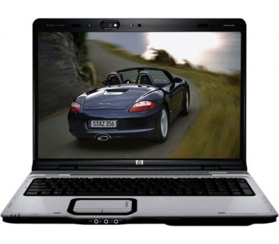
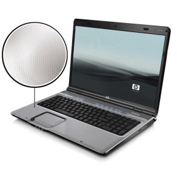

PROCESSOR
AMD Turion 64 X2 Dual-Core Mobile Technology TL-56 1.8GHz
512KB+512KB L2 Cache
MEMORY
2048 MB DDR2 System Memory (2 Dimm)
Max Memory: 2GB
HARD DRIVE
160 GB (5400 RPM) SATA
MULTIMEDIA DRIVE
LightScribe Super Multi 8X DVD R/RW with Double Layer Support
DIGITAL MEDIA
5-in-1 integrated Digital Media Reader for Secure Digital cards, MultiMedia cards, Memory Stick, Memory Stick Pro, or xD Picture cards.
HP FINISH and FEATURES
HP Imprint Finish and HP Pavilion WebCam with Integrated Microphone.
DISPLAY
17.0" WXGA+ High-Definition BrightView Widescreen (1440 x 900).
VIDEO GRAPHICS
NVIDIA GeForce Go 6150 (UMA) w/ Up to 559 MB shared RAM.
COMMUNICATION
High speed 56k modem.
NETWORK CARD
Integrated 10/100BASE-T Ethernet LAN (RJ-45 connector)
WIRELESS
802.11b/g WLAN
KEYBOARD
101-key compatible,
Notebook keyboard with scroll bar and integrated numeric keypad,
2 Quick Launch Buttons-HP Quick Play Menu and DVD.
POINTING DEVICE
Touch Pad with On/Off button and dedicated vertical scroll Up/Down pad.

SOUND
Altec Lansing
PC CARD SLOTS
1 ExpressCard/54 Slot (also supports ExpressCard/34).
EXTERNAL PORTS
4 Universal Serial Bus (USB) 2.0,
1 Headphone out w/SPDIF Digital Audio,
1 microphone-in,
1 VGA (15-pin),
1 TV-Out (S-video),
1 RJ-11 (modem),
1 RJ -45 (LAN),
1 Expansion Port 3, 1 IEEE 1394 Firewire (4-pin),
1 Consumer IR (Remote Receiver).
DIMENSIONS
15.16 (L) x 11.65" (W) x 1.57" (H).
WEIGHT
7.8 lbs
POWER
90W AC Adapter,
8-Cell Lithium-Ion battery
OPERATING SYSTEM
Genuine Windows Vista Home Premium.
SECURITY AND SUPPORT
Kensington MicroSaver lock slot,
Power-on password,
Accepts 3rd party security lock devices,
HP Total Care Help & Support Center,
PC Recovery (Softthinks Restore Solution).
MULTIMEDIA
Vongo,
HP PhotoSmart Essentials,
HP Quick Play,
Muvee AutoProducer Basic Edition,
RealRhapsody,
Roxio Creator 9 Basic,
Snapfish.